Material didáctico: Batería musical
Nuestro primer material didáctico será una batería musical para explicar gráficamente cada una de las partes.
No nos planteamos una batería hiperrealista sino un esquema con configuras geométricas sencillas. Lo importante ahora es coger soltura en el duplicado de objetos y controlar su colocación correcta en el espacio.
Comenzamos eliminando el cubo por defecto ("Supr") y añadiendo un cilindro (Añadir/Malla/Cilindro). Presenta su base y su tapa perpendiculares al eje Z y, como nosotros lo queremos para el bombo, le aplicamos una rotación de 90º en el eje Y ("RY90").
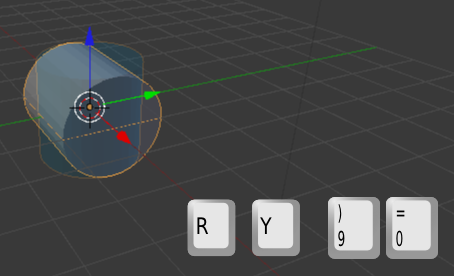Para que tenga la proporción del bombo lo escalamos en el eje X ("SX").
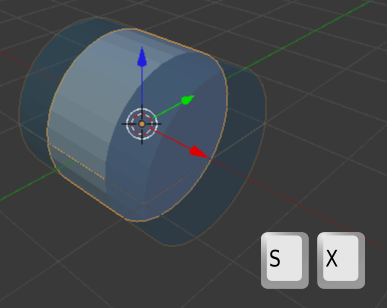Para embellecer nuestro bombo vamos a duplicar ("Shift_D") este cilindro y lo escalamos ("S") al alza ligeramente. Una vez concluida esa edición ("Intro") hacemos un nuevo escalado en X ("SX"). Para terminar lo desplazamos en X ("GX") o usamos el Manipulador 3D moviendo la flecha roja.
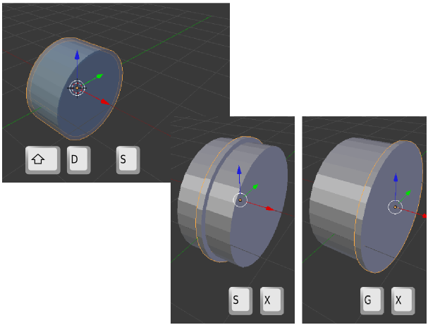Aprovechamos para reescalar ya que, al estar situado en su lugar de destino, nos hacemos mejor idea de si la proporción es la deseada. Cuando le demos el visto bueno definitivo lo duplicamos ("Shift_D") y lo desplazamos en X (rojo) para colocarlo en el extremo opuesto.
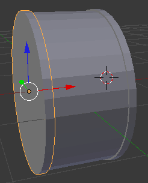Lo damos por concluido porque de momento sólo buscamos una representación esquemática. Seleccionamos los tres objetos haciendo clic derecho sobre cada uno mientras mantenemos pulsada la tecla "Shift", los duplicamos ("Shift_D") y los desplazamos (rojo) para que no queden superpuestos a los originales.
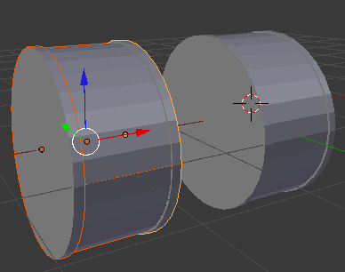Nos preocupamos de que continúen los tres objetos seleccionados y les hacemos un giro de 90º en el eje Y ("RY90") para ponerlo de pie.
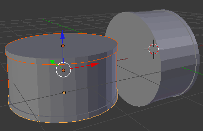Los escalamos en Z ("SZ") para que adquieran la proporción de un tom. Después los escalamos "S" sin restringir en ningún eje para que la proporción respecto al bombo sea adecuada. En la siguiente imagen se muestra el tom ya desplazado con el Manipulador 3D para ocupar un lugar cercano al que será su destino final.
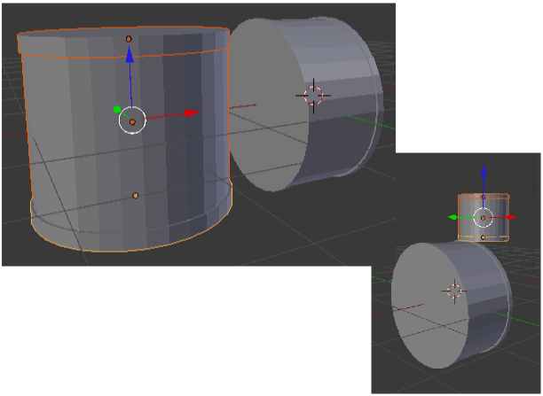Nos colocamos en un punto de vista ortográfico ("NumPad 5") lateral ("NumPad 3") para controlar el giro sin tener que restringir en ningún eje. Los tres objetos siguen seleccionados.
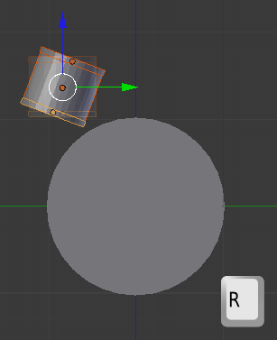Ya que estamos bien situados, duplicamos ("Shift_D") el tom y lo desplazamos en Y (verde).
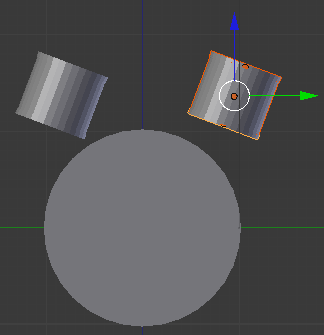Y, como es lógico, lo giramos ("R") y desplazamos (verde) para que queden los dos toms más o menos simétricos.
Llega el momento de seleccionar los seis elementos que conforman la pareja de toms, colocarnos en vista frontal ("NumPad 1") y girar ("R") para que se orienten hacia el músico. Si no estuviéramos en ese punto de vista ya sabemos que deberíamos restringir el giro con "RY".
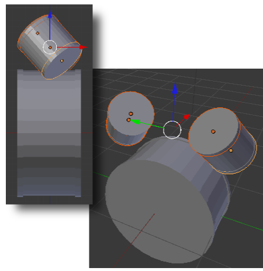Sin duda ya comienza a parecer una batería. Como estos toms ya están girados no nos interesan para el tom de suelo. Así que volvemos a seleccionar los tres objetos del bombo, los duplicamos ("Shift_D") y los desplazamos para volver a comenzar tal y como hicimos con el primer tom. Este nuevo instrumento necesita un giro de 90º en el eje Y ("RY90") y debe tener unas proporciones similares a las de los toms iniciales pero su tamaño debe ser algo mayor. Tras colocarlo en su lugar de destino esta es la impresión general.
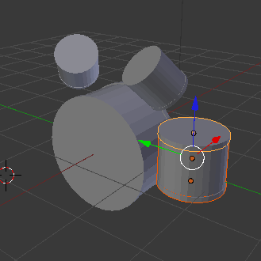Debe tener tres patas que pueden ser cilindros. Tras sacar a escena uno nuevo, y hacerle los escalados necesarios, lo colocamos en su lugar usando sobre todo la vista superior ("NumPad 7") para que quede tangente y el frontal ("NumPad 1") para asegurarnos que el pie de la pata queda a la altura del mismo supuesto suelo que el bombo.
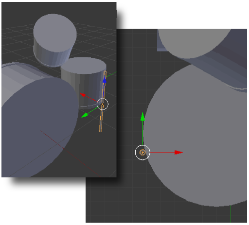Cuando ese elemento esté en su sitio comenzamos a duplicarlo y colocarlo alrededor del tom de suelo (lo mejor es usar el punto de vista "NumPad 7" en vista ortográfica)
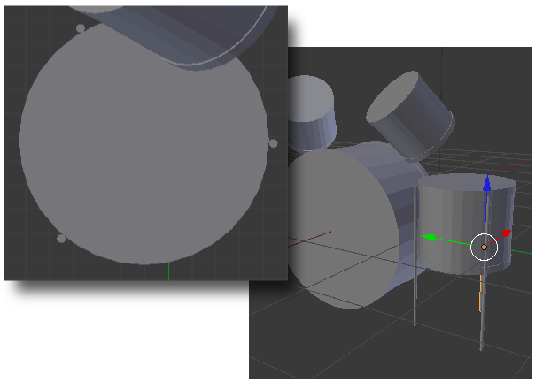Hemos puesto en práctica un modo de trabajo que se repite muchas veces con Blender. Lo dejamos aquí pero aconsejamos continuar el modelado para aumentar la destreza. Este es un posible resultado.
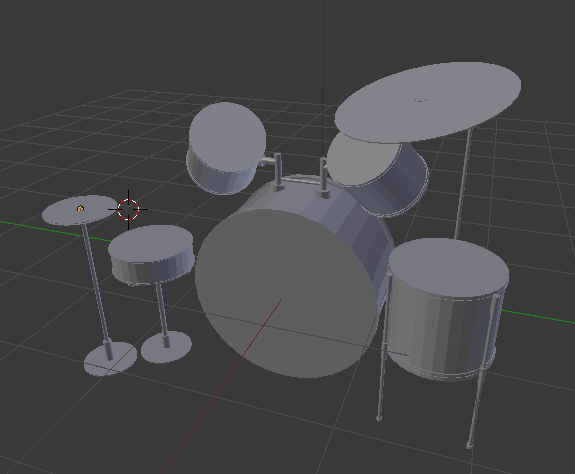En el apartado siguiente aprenderemos a obtener una imagen realmente útil de un modelado para poder usarla como material didáctico.
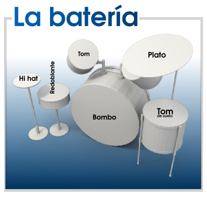